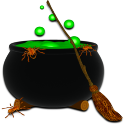
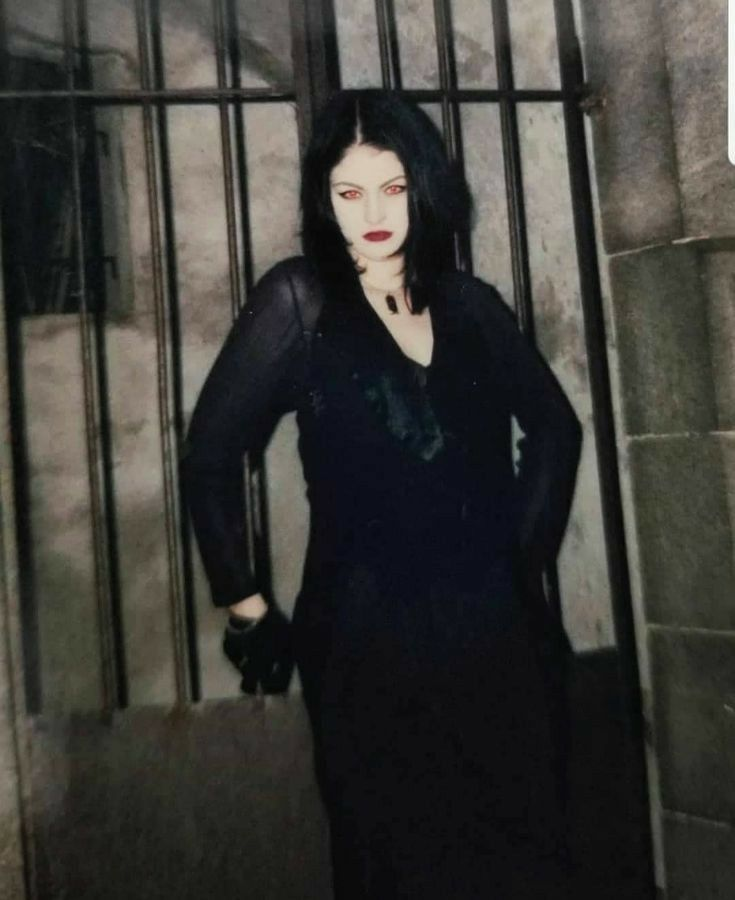

Tu attends depuis une petite dizaine de minutes sur la place Arago, là où tu as imaginé mille fois ta vie si tu avais un peu plus d'autonomie, ou ta vie d'ici 2 ans, quand tu serais étudiante et enfin locataire de ton propre appart. Tu pourrais librement vagabonder dans ces rues baignées d'histoire et de soleil mordoré. La brise d'octobre saisit ton cou, et aujourd'hui, tu as envie d'une aventure. Evidemment, il y a Vincent au magasin de musique qui fait palpiter ton petit cœur, et puis tous les livres à découvrir à Cellules grises, et les bijoux d'elfe et de sorcière à l'Anaconda... Mais tu pourrais aussi bien rester ici à contempler le flux et reflux des passants, et imaginer ce qui se trame dans leurs têtes.Emma interrompt tes pensées absconses en te sautant dans les bras. Tu as toujours été touchée par son naturel désarmant, toi qui es si distante et qui as si peur du contact physique. Pourtant quand c'est Emma, tu pourrais la suivre n'importe où tant son contact élève ton niveau d'endorphines et d'ocytocine. Emma t'enveloppe de son long trench noir de corbeau et tu te sens soudain importante. Là, tout de suite, tu as l'impression de compter pour quelqu'un. Aude et Soline débarquent en riant et en faisant claquer les talons de leurs bottes. Emma les embrasse et tu te sens verdir d'une petite pointe de jalousie. Tu calmes le jeu et souris à tes amies. L'année dernière a été dure pour toi. Soline a toujours été ta meilleure amie, vous avez tout traversé ensemble. Mais le jour où Aude, tempête d'audace et de charisme, est entrée dans vos vies, Soline a glissé vers les terres plus prometteuses de cette dernière. Elle s'est ouverte, s'est déployée amicalement et amoureusement, et toi tu es restée au même stade qu'en 3ème. Toujours cette petite fille qui rêve, cette jeune femme qui n'ose pas.
Alors quand Emma est venue à son tour te chercher, a vu quelque chose de spécial en toi alors que son crédit de coolitude était stratosphérique comparé au tien, tu t'es enfin sentie vue et reconnue. Tu n'existais plus seulement dans les souvenirs doux-amers de ton amitié fusionnelle avec Soline. Tu as toujours eu besoin de fusion, d'exclusivité. De fait tu te demandes : est-ce que tu es atteinte d'un trouble rare, le syndrome de l'amitié possessive et pathologiquement absolue, ou bien tes amies sont tes mamans de substitution quand le monde te fait trop peur pour être affronté seule ?

Quand Emma vous propose d'aller visiter cette étrange librairie cachée, façon Speakeasy pendant la Prohibition, tu fonces sur l'occasion. Il faut que tu sortes de ton petit périmètre de survie bien confortable. Elle t'offre une aventure. Saisis cette chance ! Soline et Aude sont aussi intriguées. Emma vous parle de rituels, de magie rouge pour attirer l'être aimé, de déesses à vénérer... et tu dis Amen à tout. Tu as toujours rêvé de visiter une boutique ésotérique, mais pas seule. C'est le moment idéal. Emma vous fait bifurquer à droite, en direction de la rue Mailly. Tu la suis aveuglément. Tu ne sais jamais trop bien te repérer en ville, alors tu fais confiance à tes copines, tu te laisses porter. Emma saisit ton bras, elle-même est excitée à l'idée d'entrer dans la librairie magique. Quels trésors allez-vous y découvrir ? Est-ce que ces livres vont changer ta vie ? Est-ce que tu vas enfin réussir à trouver un rituel efficace pour booster sa confiance en soi ? Emma sonne au premier étage à l'interphone. La tension monte. Et si vous atterrissiez dans l'appartement d'un psychopathe pervers ? Emma te prend par la main, et vous poussez à deux la lourde porte de l'immeuble. Un magnifique escalier hélicoïdal de pierre s'offre à vous. La résidence est vraisemblablement cossue et des grandes plantes vertes sont disposées de façon ornementale à chaque étage. Tu sens tes muscles se décontracter. Tu te vois totalement vivre dans cet immeuble d'ici quelques années. Si seulement...

Emma sonne à nouveau à la sonnette attenante à la double porte en bois surmonté de plaques dorées. Le heurtoir est en forme de délicate main de femme ornée d'une bague à l'annulaire. Ton cœur s'emballe à nouveau. Tout est possible dans cet entre-deux. Alors toutes les images possibles se bousculent dans ta tête...
Une femme blonde d'une quarantaine d'années ouvre la majestueuse porte et dévoile un magnifique espace derrière elle. Les livres sont disposés tout autour des murs blancs, et au centre de la fastueuse librairie se trouve une vitrine où des pendules de toutes formes sont exposés. Dans un coin s'amoncellent des pyramides de bougies classées par couleur et des bacs à encens indiens, japonais et d'autres pays. Tu crois rêver. Tu es tombée dans un univers parallèle. Les gens de cette résidence savent-ils seulement ce que ces portes dissimulent comme trésors ? Tu te sens privilégiée et serres la main d'Emma en guise de reconnaissance. Elle te sourit à son tour. Soline et Aude déambulent dans la boutique, Soline est attirée par les pendules et Aude teste tous les encens. Quant à toi, tu passes au crible tous les titres que la librairie renferme. Les livres sont tous sublimes, anciens, précieux, révélant des reliures onéreuses, de fines enluminures parant des feuilles de papier à cigarette qu'on a envie de tourner à loisir, comme dans les missels de ton enfance à l'église. Mais au lieu de trouver des prières catholiques, les titres vont du Traité de magie blanche au Dragon Rouge, La Poule Noire, Le Grand et le Petit Albert contre lesquels ta mère t'avait mis en garde...
Tout t'enthousiasme et tu sens une forme d'ivresse déborder de toi. Emma pose sa main sur un livre plus récent : Le livre des correspondances.
« Pour créer nos propres rituels » dit-elle avec assurance. Cette idée ne t'avait jamais effleuré l'esprit. C'est du génie ! Tu consultes le prix. 14€90. Tu consultes le contenu de ton porte-monnaie. 17€55. Ton regard se pose sur une autre tranche, un livre en anglais cette fois. Tu n'en reviens pas qu'ils vendent des livres en anglais. C'est ton jour de chance ! Tu fais anglais renforcé au lycée, et c'est de loin ta matière préférée. Tout t'attire dans cette langue, et tu rêves d'aller étudier en Irlande, là où les légendes et les mythes vivent encore. Tu analyses le titre : Book of Shadows de Phyllis Curott. La seule fois où tu as entendu cette expression c'était dans Charmed. Mais ici ce n'est pas un livre de sortilèges. Ce sont les mémoires d'une sorcière américaine qui a découvert la wicca alors qu'elle était une avocate ultra compétitive à New-York. Tu te sens autant attirée par le premier livre que par le deuxième. Tu ne sais pas lequel choisir.
Si tu choisis le livre des correspondances pour créer tes propres rituels, tourne à la page 8
Si tu choisis les mémoires « Book of Shadows », tourne à la page 17